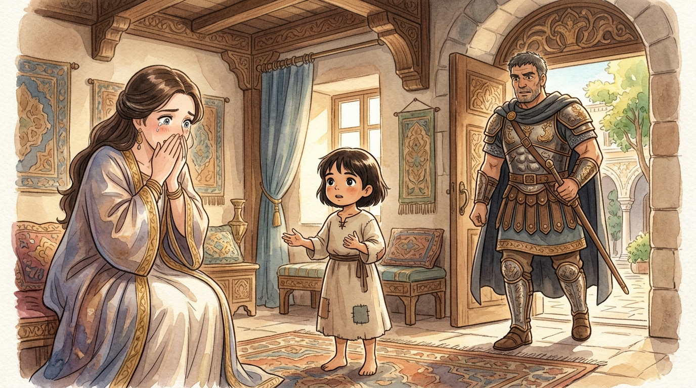
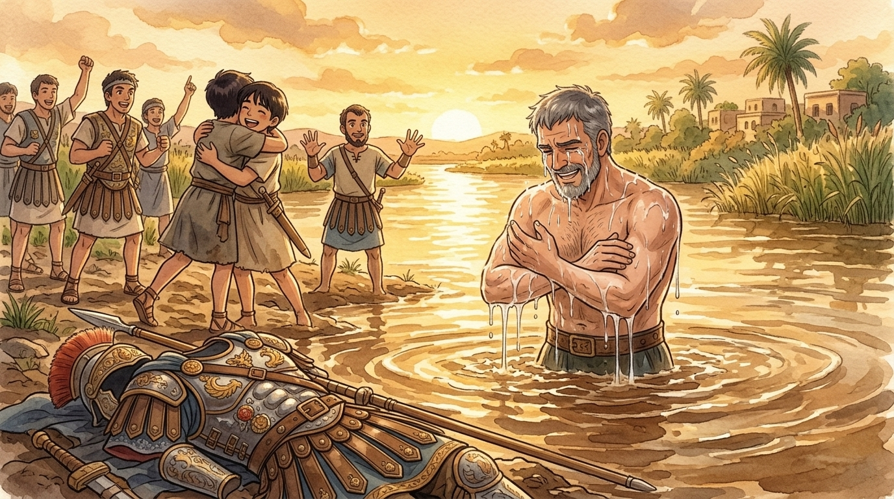
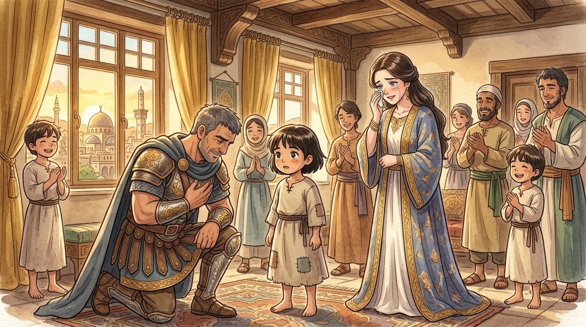

Long ago, raiders from Syria carried off a young girl from the land of Israel, and she became a servant in the grandest house in Damascus — the house of Naaman, commander of the king's army. If she could have sent letters home to her mother, they might have read like these. (Read them gently, dear reader. Being small and far from home is hard — and watch what God does with it.)1
✉️ First letter
Dear Mother — I am safe, and I serve the lady of the house, who is kind to me. Her husband is the great general Naaman. Here in Damascus they say his name like a trumpet blast: he wins every battle, the king leans on his arm, and when his chariot passes, the whole street cheers.
But Mother, I have learned this house's sad secret. Under his splendid armor, the great man has leprosy — the dreaded skin disease.2 It is spreading, slowly, and no doctor in Syria can stop it. My lady weeps when he cannot see her. All his medals, all his victories — and every morning he checks his skin, and every morning it is a little worse. The mightiest man in Syria is afraid, and no one is allowed to say so.
I keep thinking of home. Of the prophet Elisha, the man of God — the wonders God works through him. Mother, you will say I am only a little serving girl and should keep my eyes down. But I cannot stop thinking it: God could heal my master. I know it. Should I say it?
✉️ Second letter
Mother — I said it.
My heart was hammering like a festival drum, but I stood before my lady and said: "If only my master would go to the prophet who is in Samaria! He would cure him of his leprosy." Fourteen words, Mother. That is all I had. My lady looked at me a long, long moment… and then she ran — RAN — to tell the general.
And here is the wonder: they listened. The great Naaman, who commands ten thousand spears, took the word of the smallest person in his house all the way to the king of Syria himself — and the king said GO, and wrote a royal letter, and now the whole household is packing as if for a war: chariots, horses, chests of silver and gold, ten sets of fine clothes. (Mother, I do not think the prophet's price will be silver. But try telling a general that gifts won't help.)

✉️ Third letter
Mother, I have the whole story now from the servants who traveled with him, and I must write quickly because my hands still shake with laughing and crying.
The general arrived at the prophet's house — a plain little house, Mother — with his horses and chariots gleaming in the street, silver enough to buy a town. He waited for the prophet to come out and perform something grand: call on his God with a loud voice, wave his hand over the sickness, thunder, lightning, something worthy of a commander of armies. Instead… Elisha did not even come to the door. He sent a messenger boy with one sentence:
And the great Naaman exploded. The servants acted it all out for me — the red face, the stamping: "He didn't even COME OUT! And the JORDAN? That muddy little stream? Are not the rivers of Damascus better than all the waters of Israel?! I could have bathed at home!" And he stormed off in a rage, ready to march all the way back to Syria — sick as ever, but with his pride intact.3
"Father — if the prophet had asked you to do some GREAT thing, would you not have done it? Storm a fortress? Fight a giant? Of course! So why not this small thing: wash, and be clean?"
And the great man stopped. And turned. And went down to the muddy Jordan, and took off the armor, and the medals, and the pride — which I think, Mother, was the real washing — and dipped himself under. Once. Twice. (The servants say he glared at the water like an enemy fortress.) Three, four, five times. Nothing. Six. Nothing. And the seventh time he came up out of the water—
—and his skin was completely healed — new and clean like the skin of a young child. The commander of Syria's armies stood in a muddy river, looking at his own arms, laughing and weeping like a boy. Healed. Every trace, gone.

✉️ Last letter
Mother, he is home — and he is not the same man who left. He went straight back to the prophet's little house (who DID come out this time) and said, before all his officers: "Now I know that there is no God in all the world except in Israel." He begged Elisha to accept the silver and gold. The prophet refused every piece — Mother, he would not take a single coin, so that Naaman would know for certain: God's healing was a gift. Grace cannot be bought; it can only be received.4
And now the mighty general tells everyone — the king, the officers, the whole cheering street — how the God of Israel made him new. My lady embraced me and cried into my hair. The general himself thanked me — ME — before the whole household.
Mother, I have been thinking all night about how God arranged it. The greatest man in Syria was healed because he finally did three small, hard things: he listened to a servant girl, he obeyed a simple instruction, and he left his pride on the riverbank. And God used the smallest person in the house to begin it all. I did not part a sea. I did not defeat a giant. I said fourteen words about my God — and look, oh look, what He did with them.5

So, dear reader, if you ever feel too small, too young, too far from where you'd rather be — keep this letter. God does His greatest work through small voices, small words, and small obediences. Speak your fourteen words. Do the simple thing He asks, even when you'd rather do something grand. And remember the muddy Jordan: the healing is always a gift. ✉️